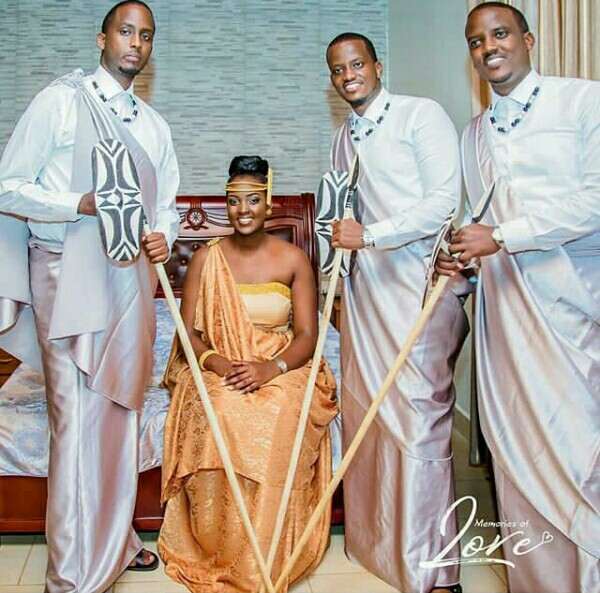

Why African clothes is important to the Africans.
Wearing African clothing is a wonderful way for many to celebrate their culture and their heritage and to commemorate the beauty of the motherland. Wearing African clothing means so much more to many people than simply being a fashion statement.
Tailors don’t make clothes simply for appearance sake; each symbol, color, and even the shape of the clothing can have a very specific purpose or meaning.
This is the only list of clothes africans like to wear in 2019
1- Rwandan umushanana Traditional Wedding Dress
Acording to here they described how it look like. Rwanda is a country that holds its cultural heritage dear. Apart from the language, not so many African countries today, for example, still cherish their traditional dress like the Banyarwanda do.
The umushanana (plural: imishanana) was traditionally made from bark cloth and animal skin. It consists of a floor-length skirt with a sash draped over one shoulder, worn over a tank top or bustier.
Rwandan men wear their umushanana with a white shirt tucked into a wrapped floor-length skirt. A black-and-white beaded necklace and a beaded walking stick finished the look.

2- Kanga for women
Is a colourful fabric similar to kitenge, but lighter, worn by women and occasionally by men throughout the African Great Lakes region. The good ways to wear kanga is to wrap it around the neck like a shawl or wrapped under an armpit and tied over the shoulder for a fancier look.
3- Gomesi
The gomesi is a floor-length, brightly colored cloth dress with a square neckline and short, puffed sleeves. The dress is tied with a sash placed below the waist over the hips. The gomesi has two buttons on the left side of the neckline.
4- African kanzu
Kanzu is the traditional dress, which was won by Swahil speaking men, but there main orgin is from Arab.